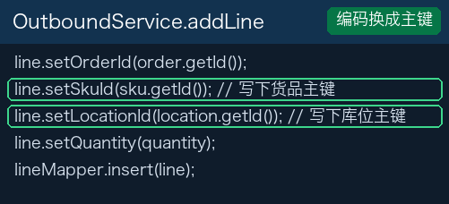
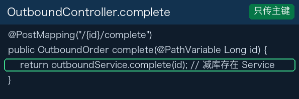
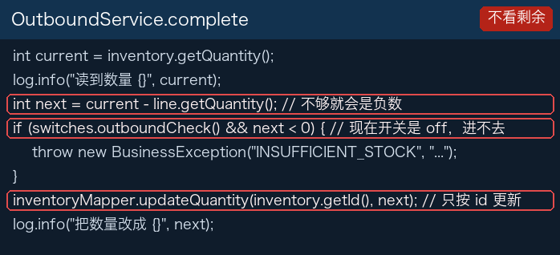
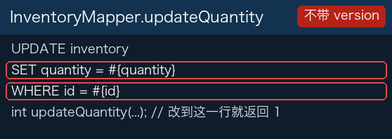
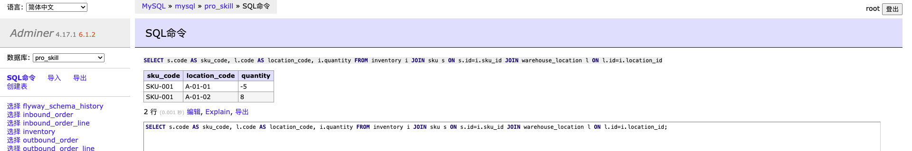

出库三个接口
POST /outbound-orders 没有请求体。单号先占位 PENDING，插入拿到主键后改成 OUT-主键。
POST /outbound-orders/1/lines 传来货品编码、库位编码、数量。行上写的是两个主键。
{
"skuCode": "SKU-001",
"locationCode": "A-01-01",
"quantity": 15
}

POST /outbound-orders/1/complete 只传主键。数量用行上已经记下的 quantity，从 inventory 里减去。




改良版改了这一块：剩余不足就拒绝
「第三部分改良版」上 outbound-check 是 on。同一张货、同一个格子，剩余 10 再出 15，完成接口返回 400，message 里是 INSUFFICIENT_STOCK。inventory 的 quantity 仍是 10，单据不会变成已完成。
已完成的单还能改数量
PATCH /outbound-orders/{id}/lines/{lineId} 只传新的数量。order-state 是 open 时，不看单据是不是草稿。库存已经按原数量减过，行上的数量可以再改成别的数。
{ "quantity": 5 }
改良版改了这一块：已完成的单不能改行
改良版上 order-state 是 enforced。状态不是 DRAFT 就拒绝，错误码 ORDER_NOT_EDITABLE。行上的数量留在完成时的那个数，inventory 不再和单据行各写各的。
两个人同时减同一行
把数量设成 1。两张出库单各出 1，几乎同时完成。两边都读到 1。optimistic-lock 是 off，更新语句是 where id = ?，不带读到的 version。两次更新都可以成功，数量变成 -1，或者变成 0 但两张单都完成。
日志里能看到两句「读到数量 1」。这一部分先确认两次都读到了旧数量。
改良版改了这一块：更新带上读到的 version
改良版上 optimistic-lock 是 on。更新写成 set quantity = ?, version = version + 1 where id = ? and version = ?。#{version} 是这次读到的版本。对不上时影响行数是 0，这一次返回 STOCK_CONFLICT。先成功的那一次把数量改成 0，后到的那一次不再把库存减成负数。
流水和入库单不在同一次提交
完成入库时会写 stock_flow。flow-after-commit 是 off，流水用另一个 Bean 的 REQUIRES_NEW 先提交。把 app.lesson.inbound-fail-before-status 设成 true 再完成一张入库单：主事务在改状态前失败，单据不是 COMPLETED，stock_flow 里已经有这个单号。
改良版改了这一块：流水和状态同一次提交
改良版上 flow-after-commit 是 on。流水、加库存、改状态写在同一个事务里。失败开关打开时，单据留在草稿，stock_flow 里也没有这个单号。
改良版改了哪四块
讲义到这里是同一份。「第三部分改良版」上不同的是这四个开关。
| 这一部分现在的代码 | 改良版上的代码 |
|---|---|
outbound-check 是 off。出 15，数量变成 -5，单据仍是 COMPLETED。 | on。剩余不足返回 INSUFFICIENT_STOCK，数量保持 10。 |
order-state 是 open。已完成的单还能改行数量。 | enforced。不是草稿就返回 ORDER_NOT_EDITABLE。 |
optimistic-lock 是 off。更新条件只有 id。 | on。条件带上读到的 version，对不上返回 STOCK_CONFLICT。 |
flow-after-commit 是 off。流水先单独提交。 | on。流水和改状态在同一个事务里，失败时两边都不留。 |
新建出库单、加一行，两个分支是同一套。课堂上把改良版合并进第三部分，带过去的是上面这四块。
重温：把改良版合并进第三部分
仓库地址仍是 https://gitee.com/dingsaier/warehouse-backend.git。源分支是 第三部分改良版，上面是改过的出库和入库流水代码。目标分支是 第三部分。讲义和这一份相同。操作和第二部分讲义最后一节相同：Fetch，切到改良版，Push，网页上创建 Pull Request，网页上合并，再把第三部分 Pull 回来。全班只合并这一次。